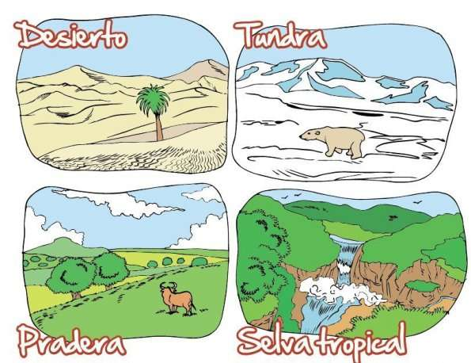
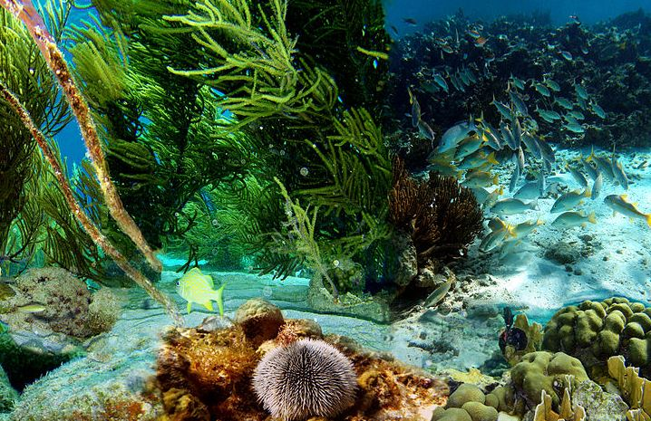

Los biomas son áreas definidas climática y geográficamente, con similares condiciones ecológicas, tales como las comunidades de plantas y animales, (que a menudo se nombran como ecosistemas). Los biomas están definidos por factores tales como la estructura de las plantas (árboles, arbustos y hierbas), los tipos de hojas (hoja ancha y hoja acicular o agujas), el espaciado de las plantas (cerrado, abierto) y el clima. A diferencia de las ecozonas, los biomas no están definidos por semejanzas genéticas, taxonómicas o históricas. Los biomas con frecuencia se identifican con patrones particulares de sucesión ecológica y vegetación clímax (casi-estado de equilibrio del ecosistema local). Un ecosistema tiene muchos biotopos y un bioma es un tipo mayor de hábitat. Un tipo principal de hábitats, sin embargo, es un compromiso ya que posee una falta de homogeneidad intrínseca. La biodiversidad característica de cada bioma, especialmente la diversidad de la flora y fauna, está en función de factores abióticos que determinan la productividad de la biomasa de la vegetación dominante. En los biomas terrestres, la diversidad de especies tiende a correlacionarse positivamente con la producción primaria neta, con la disponibilidad de humedad y con la temperatura. El bioma está caracterizado fundamentalmente por el clima existente, en particular, por las precipitaciones y temperatura. Además, se distinguen por el aspecto de sus comunidades (seres vivos – organismos) y por el tipo de vegetación donde cada uno tiene unas características específicas.
 El bioma está caracterizado fundamentalmente por el clima. Fue de hecho la distribución zonal de los climas lo que llevó a poner de relieve la zonificación de las tierras a finales del siglo XIX, y después, los biomas. Los parámetros físicos particularmente involucrados son temperatura y las precipitaciones. A su vez la temperatura está determinada especialmente con la latitud y la altitud. La latitud: A medida que nos movemos hacia latitudes altas, la temperatura media disminuye, Así quedan definidos los climas ecuatorial, tropical, subtropical, templado, subpolar y polar. Además en las zonas ecuatoriales las diferencias de temperatura a lo largo de año disminuyen. La altitud: En general, el aumento de la altitud causa una distribución de los tipos de hábitats similar al del aumento de la latitud. Así quedan determinados los tipos basal, premontano, montano, alpino y nival. La precipitación, que determina los tipos húmedo, subhúmedo, semiárido y árido. Además, influyen la variación estacional —la lluvia puede estar distribuida uniformemente a lo largo del año o estar marcada por las variaciones estacionales. Además la estación lluviosa puede darse en verano, como en la mayoría de las regiones de la Tierra, o en invierno como en las regiones de clima mediterráneo. Las precipitaciones, además pueden inundar periódicamente amplas zonas definiendo un bioma adaptado a ese fenómeno. Los sistemas de clasificación de los biomas más utilizados corresponden a la latitud (o la zonificación de temperaturas) y la humedad. De hecho, el agua y la temperatura —cuya distribución a escala global está en gran medida condicionada por la rotación de la Tierra sobre su eje— son los dos factores clave para el establecimiento de un clima que presentan, a escala global y continental, variaciones según la latitud. Esta distribución está, por tanto, en correlación con bandas de vegetación homogéneas. Estas bandas latitudinales fueron observadas por primera vez por Vasili Dokucháyev, padre de la edafología rusa, y se llamaron zonas (del griego «zonê» que significa cintura), lo que dio a luz al concepto de zonificación, fundamental en la geografía del medio natural. Así por ejemplo, la biodiversidad es creciente, en general, desde los polos al ecuador, ya sea desde un punto de vista animal o vegetal, como en el caso de la selva ecuatorial densa que es el bioma más rico y diverso.